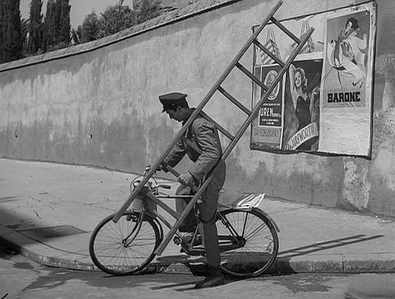

Bicycle Thieves, Still
Vittorio De Sica · 1948 · Film still, black and white
In copyright. Look and learn: shown for study, not for download.
Vittorio De Sica shot the whole film on location, with no studio sets, and cast only untrained actors. Lamberto Maggiorani, who plays the father, was a factory worker; De Sica chose him when he brought his young son to an audition. Enzo Staiola, who was eight, was cast after De Sica noticed him watching the filming in the street while helping his own father sell flowers. Staiola was almost run over twice while crossing the street during the shoot.